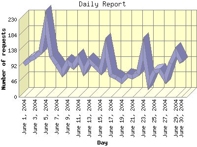

Report generated by Analog 5.91beta1 and Report Magic 2.21
|
Web Server Statistics for "Harish Narayanan (hnarayan) - June 2004" Report generated by Analog 5.91beta1 and Report Magic 2.21 |
The Daily Report identifies the activity for each day within the reporting period. Remember that one page hit can result in several server requests as the images for each page are loaded.

| Day | Number of requests | Number of bytes transferred | Percentage of the bytes | Percentage of the requests | |
|---|---|---|---|---|---|
| 1. | June 1, 2004 | 97 | 2.663 MB | 4.25% | 3.38% |
| 2. | June 2, 2004 | 110 | 2.587 MB | 4.13% | 3.83% |
| 3. | June 3, 2004 | 120 | 1.692 MB | 2.70% | 4.18% |
| 4. | June 4, 2004 | 132 | 1.813 MB | 2.90% | 4.60% |
| 5. | June 5, 2004 | 222 | 2.646 MB | 4.23% | 7.74% |
| 6. | June 6, 2004 | 121 | 1.945 MB | 3.11% | 4.22% |
| 7. | June 7, 2004 | 98 | 1.807 MB | 2.89% | 3.42% |
| 8. | June 8, 2004 | 72 | 875.752 KB | 1.37% | 2.51% |
| 9. | June 9, 2004 | 103 | 6.986 MB | 11.16% | 3.59% |
| 10. | June 10, 2004 | 90 | 2.861 MB | 4.57% | 3.14% |
| 11. | June 11, 2004 | 117 | 1.538 MB | 2.46% | 4.08% |
| 12. | June 12, 2004 | 76 | 487.966 KB | 0.76% | 2.65% |
| 13. | June 13, 2004 | 107 | 1.877 MB | 3.00% | 3.73% |
| 14. | June 14, 2004 | 92 | 2.425 MB | 3.87% | 3.21% |
| 15. | June 15, 2004 | 75 | 2.457 MB | 3.92% | 2.61% |
| 16. | June 16, 2004 | 147 | 2.926 MB | 4.67% | 5.12% |
| 17. | June 17, 2004 | 65 | 1.347 MB | 2.15% | 2.27% |
| 18. | June 18, 2004 | 58 | 1.639 MB | 2.62% | 2.02% |
| 19. | June 19, 2004 | 46 | 1.461 MB | 2.33% | 1.60% |
| 20. | June 20, 2004 | 64 | 380.232 KB | 0.59% | 2.23% |
| 21. | June 21, 2004 | 60 | 2.292 MB | 3.66% | 2.09% |
| 22. | June 22, 2004 | 69 | 1.813 MB | 2.90% | 2.40% |
| 23. | June 23, 2004 | 144 | 2.103 MB | 3.36% | 5.02% |
| 24. | June 24, 2004 | 41 | 2.474 MB | 3.95% | 1.43% |
| 25. | June 25, 2004 | 75 | 593.804 KB | 0.93% | 2.61% |
| 26. | June 26, 2004 | 79 | 3.195 MB | 5.11% | 2.75% |
| 27. | June 27, 2004 | 53 | 396.695 KB | 0.62% | 1.85% |
| 28. | June 28, 2004 | 100 | 1.434 MB | 2.29% | 3.49% |
| 29. | June 29, 2004 | 134 | 3.946 MB | 6.30% | 4.67% |
| 30. | June 30, 2004 | 102 | 2.000 MB | 3.19% | 3.56% |
Most active day June 5, 2004 : 145 pages sent. 222 requests handled. 2,774,356.00 served.
Daily average: 95 requests handled. 2.087 MB served.
This report was generated on August 5, 2004 15:51.
Report time frame June 1, 2004 00:13 to June 30, 2004 23:30.
| Web statistics report produced by: | |
 Analog 5.91beta1 Analog 5.91beta1 |  Report Magic 2.21 Report Magic 2.21 |